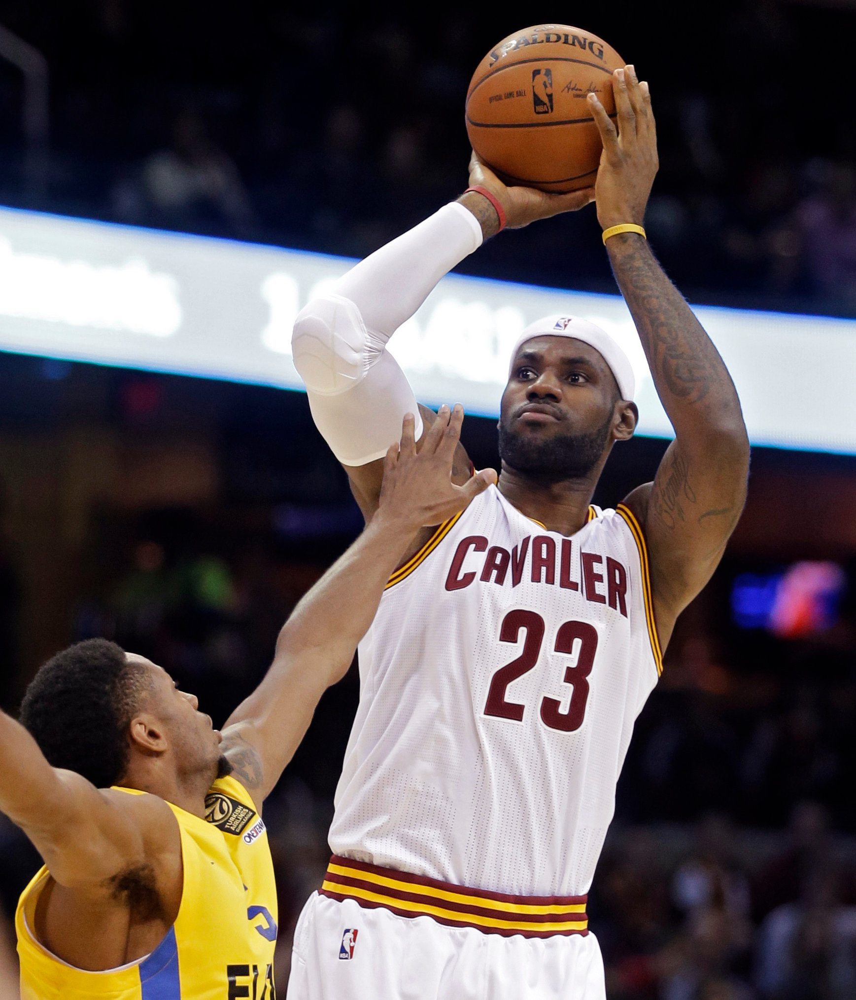
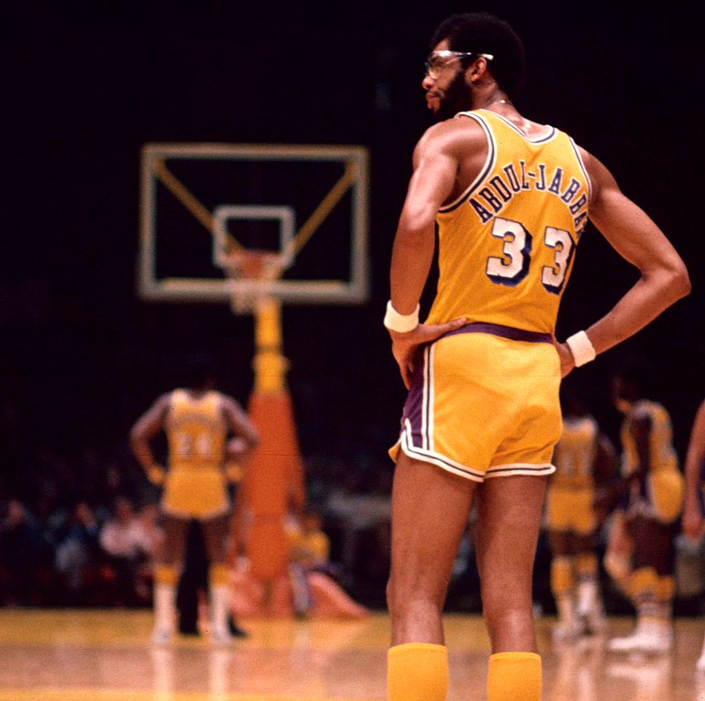
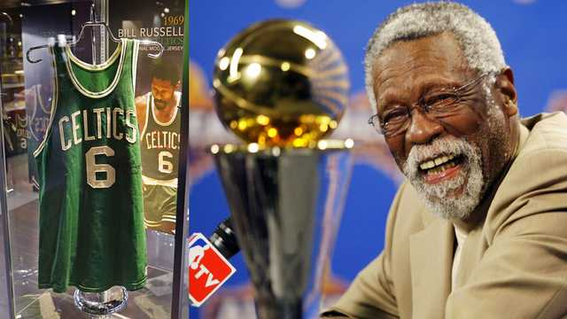
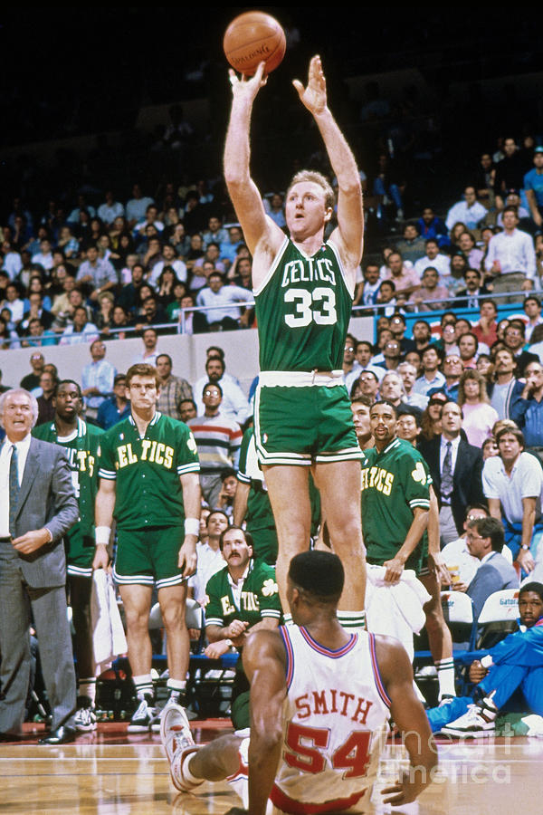

1. Michael Jordan. Títulos: 6. Promedios: 30’1 puntos, 6’2 rebotes y 5’3 asistencias. «Mientras ganaba se convertía en un icono global. Su juego traspasó la cancha y su brillantez en la pista definió los parámetros de una nueva generación de jugadores»…

. LeBron James. Títulos: 3. Promedios: 27’1 puntos, 7’4 rebotes y 7’4 asistencias. «Ha construido su juego en base a la potencia, pero su habilidad para el pase quizás sea su mejor virtud. Ha reinventado la forma de disfrutar de un atleta en su mejor punto de forma»…
3. Kareem Abdul-Jabbar. Títulos: 6. Promedios: 24’6 puntos, 11’2 rebotes y 3’6 asistencias. «Nadie en la historia puede igualar su largo palmarés. Su gancho era imparable y se puede discutir que no fuera deslumbrante pero no que haya alguien mejor»…
4. Bill Russell. Títulos: 11. Promedios: 15’1 puntos, 22’5 rebotes y 4’3 asistencias. «El mayor ganador de la historia del baloncesto. Convirtió a los Celtics en una fortaleza defensiva y fue el contraste perfecto para Chamberlain, así como un jugador que no hubiera desentonado en ninguna época»…
6. Wilt Chamberlain. Títulos: 2. Promedios: 30’1 puntos, 22’9 rebotes y 4’4 asistencias. «Era un adelantado a su tiempo. Sus números son legendarios. La única razón por la que no está más arriba en estas listas es porque sólo ganó dos campeonatos»…

Larry Bird. Títulos: 3. Promedios: 24’3 puntos, 10 rebotes y 6’3 asistencias. «Magic y él revitalizaron el baloncesto y la rivalidad entre Celtics y Lakers. Hasta la llegada de LeBron James se le podía considerar el mejor alero de siempre»…
8. Tim Duncan. Títulos: 5. Promedios: 19 puntos, 10’8 rebotes y 2,2 tapones. «Dominó durante dos décadas en los dos lados de la cancha con un arsenal sencillo: tiro de media distancia y un perfecto posicionamiento defensivo, para colocarse como uno de los mejores ganadores»…

9. Kobe Bryant. Títulos: 5. Promedios: 25 puntos, 5’2 rebotes y 4’7 asistencias. «Por encima de su rendimiento estadístico el legado que deja Kobe Bryant son su mentalidad afliada y su ambición desenfrenada por convertirse en un maestro de este deporte»…
10. Shaquille O’Neal. Títulos: 4. Promedios: 23’7 puntos, 10’9 rebotes y 2’3 tapones. «Este pívot del Salón de la Fama transformó el juego con una combinación de agilidad, explosividad y tamaño que la Liga nunca antes había visto»…